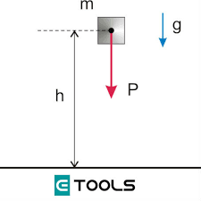
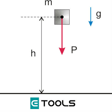

Padlet Apple de Diego
Las principales ventajas de la energía mecánica son las siguientes:
1-Resulta una de las más económicas de generar, entre todos los tipos de energía.
2-Afectó positivamente la forma como se realizaban las tareas, disminuyendo el trabajo manual y en otros casos anulándolos completamente.
3-La fuerza animal empleada anteriormente fue sustituida por máquinas.
4-El potencial de la fuerza a producir es superior a la ejercida manualmente.
5-Depende de sí misma para generar la potencia, por lo cual es autónoma.
6-Agiliza procesos en los cuales se tendría que emplear mucha fuerza humana.
7-Es más eficiente que el trabajo manual.
8-Este tipo de energía es de fácil acceso, su distribución y uso es muy económico en los diferentes sectores.
9-Es una energía muy versátil, así que tiene múltiples aplicaciones y usos.
10-Es más cómodo y seguro, las máquinas han disminuido los riesgos laborales y se han reducido los accidentes.
Las principales desventajas de la energía mecánica son las siguientes:
1-Hay un costo importante en el mantenimiento de las máquinas que aprovechan esta energía.
2-Las maquinarias suelen ser muy pesadas, lo que abre algunos riesgos.
3-Las máquinas pueden quedar obsoletas con el paso del tiempo y requieren ser sustituidas.
4-El traslado de maquinaria pesada suele representar un costo importante.
5-Se requiere capacitación y/o especialización para el uso de cierta maquinaria.
6-Con el tiempo, en algunos sectores las máquinas reemplazan la fuerza de trabajo humana, creando desempleo.
7-La transmisión de este tipo de energía a largas distancias es complicada.
8-Las fallas en las máquinas son continuas y representan un costo por concepto de reparación o sustitución.
9-Hay un mayor desgaste a nivel térmico.
10-La interacción con las máquinas puede ser un tanto complicada para algunas personas.
| |
 |
| |